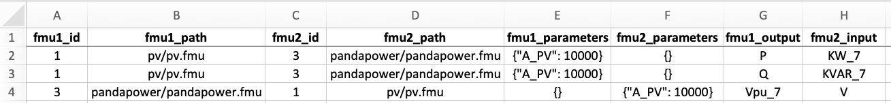

Power System Simulations¶
Simulating FMUs with the CyDER utility¶
As power-system simulations can involves large systems (distribution grid with thousands of nodes), we provide a utility function to facilitate connecting FMUs and launching simulation without needing to code it in Python with PyFMI.
The feature is based of a table defining connections between FMUs. The format is described below.
- Where:
- fmu_id: unique ID per FMU instance,
- fmu_path: path to the FMU file,
- fmu_parameters: JSON object to set parameters after loading the FMU,
- fmu1_output: Name of the output from the first FMU
- fmu2_input: Name of the input from the second FMU
In order to launch a simulation the “cyders” command line can be used as follow:
cyders --start 0 --end 1 --connections table.xlsx
or for the full list of options:
cyders --start 0 ^
--end 1 ^
--connections table.xlsx ^
--fmu_type me ^
--nb_steps 50 ^
--solver CVode ^
--rtol 0.001
--atol 0.001
--result result.csv
- Where:
- start: is the time at start,
- end: is the simulation’s stop time,
- connections: is the table file describing how FMU are connected in the system,
- fmu_type: is Model-Exchange or Co-Simulation deciding which master should be used (not implemented),
- nb_steps: is the number of steps returned in the result file,
- solver: is the name of the solver to pick,
- rtol: is the relative tolerance for the solver,
- atol: is the absolute tolerance for the solver,
- result: is the filename where all the results are saved.
Note1: FMU compiled with SimulatorToFMU tend to have a bad performance in Model-Exchange mode, see the next section to increase simulation speed.
Note2: The table could be replaced by SSP in the future. SSP stands for System Structure and Parameterization. The standard defines an open format for describing systems of interconnected FMUs and the parameterization of such systems. It can also specify multiple configurations of a given system.
Customizing a master algorithm¶
# Load both pandapower and pv fmus
from pyfmi import load_fmu
pandapower = load_fmu('pandapower/pandapower.fmu', kind='cs', log_level=7)
pv = load_fmu('pv_inverter/SCooDER_Components_Controller_' +
'Model_Pv_0Inv_0VoltVarWatt_0simple_0Slim_' +
'0zerohold_0onlyPv_0firstorder.fmu',
kind='cs', log_level=7)
print('PANDAPOWER FMU')
# Retrieve input names and ids
pandapower_input_name = pandapower.get_model_variables(causality=2).keys()
pandapower_input_id = [pandapower.get_variable_valueref(
pandapower_input_name[i]) for i in range(0, len(pandapower_input_name))]
print('INPUTS = ' + str(pandapower_input_name) +
' --> ' + str(pandapower_input_id))
# Retrieve output names and ids
pandapower_output_name = pandapower.get_model_variables(causality=3).keys()
pandapower_output_id = [pandapower.get_variable_valueref(
pandapower_output_name[i]) for i in range(0, len(pandapower_output_name))]
print('OUTPUTS = ' + str(pandapower_output_name) +
' --> ' + str(pandapower_output_id))
print('PV FMU')
# Retrieve input names and ids
pv_input_name = pv.get_model_variables(causality=2).keys()
pv_input_id = [pv.get_variable_valueref(
pv_input_name[i]) for i in range(0, len(pv_input_name))]
print('INPUTS = ' + str(pv_input_name) +
' --> ' + str(pv_input_id))
# Retrieve output names and ids
pv_output_name = pv.get_model_variables(causality=3).keys()
pv_output_id = [pv.get_variable_valueref(
pv_output_name[i]) for i in range(0, len(pv_output_name))]
print('OUTPUTS = ' + str(pv_output_name) +
' --> ' + str(pv_output_id))
# Set PV and inverter settings
pv_inverter_parameters = {
'weather_file':("C:\\Users\\cyder\\Desktop\\fmi-for-power-system\\" +
'examples\\002_cosimulation_custom_master\\pv_inverter\\' +
'USA_CA_San.Francisco.Intl.AP.724940_TMY3.mos'),
'n': 1,
'A': 2000/0.158,
'eta': 0.158,
'lat': 37.9,
'til': 10,
'azi': 0,
'thrP': 0.05,
'hysP': 0.04,
'thrQ': 0.04,
'hysQ': 0.01,
'SMax': 2000*1.05,
'QMaxInd': 2000*1.05*0.44,
'QMaxCap': 2000*1.05*0.44,
}
for key, value in pv_inverter_parameters.items():
pv.set(key, value)
# Inititalize both FMUs
start = '2016-06-17 00:00:00'
end = '2016-06-18 00:00:00'
import datetime as dt
begin = dt.datetime.strptime('2016-01-01 00:00:00',
'%Y-%m-%d %H:%M:%S')
start = dt.datetime.strptime(start, '%Y-%m-%d %H:%M:%S')
end = dt.datetime.strptime(end, '%Y-%m-%d %H:%M:%S')
start_s = int((start - begin).total_seconds())
end_s = int((end - begin).total_seconds())
pandapower.setup_experiment(
start_time=start_s, stop_time=end_s)
pandapower.initialize()
pv.setup_experiment(
start_time=start_s, stop_time=end_s)
pv.initialize()
# Define simulation parameters
large_step_size = 3600
small_step_size = 1
voltage_tolerance = 0.001
max_number_iteration = 10
v7 = 1
result = {'time': [], 'p': [], 'q': [], 'v7': []}
begin_since_epoch = (
begin - dt.datetime.utcfromtimestamp(0)
).total_seconds()
clock_start = dt.datetime.now()
for time in range(start_s, end_s, large_step_size):
converged = False
iteration = 0
previous_v7 = 0
while not converged:
# Define step size
converged = (abs(v7 - previous_v7) < voltage_tolerance or
iteration > max_number_iteration)
previous_v7 = v7
if converged:
step = large_step_size - iteration * small_step_size
if not converged:
step = small_step_size
# Set PV input inputs and do step
pv.set_real(pv_input_id, [v7])
pv.do_step(current_t=time, step_size=step)
q, p = list(pv.get_real(pv_output_id))
# Set PandaPower inputs and do step
pandapower.set_real(pandapower_input_id, [q, p])
pandapower.do_step(current_t=time, step_size=step)
v12, v7 = list(pandapower.get_real(pandapower_output_id))
# Save results
if iteration is not 0:
result['time'].append(
dt.datetime.utcfromtimestamp(begin_since_epoch + time))
result['p'].append(p)
result['q'].append(q)
result['v7'].append(v7)
# Increase time and iteration count
iteration += 1
time += step
print('Converged in ' + str(iteration - 1) + ' iterations')
clock_end = dt.datetime.now()
print('Duration = ' + str((clock_end - clock_start).total_seconds() / 60))
# Terminate FMUs
pv.terminate()
pandapower.terminate()